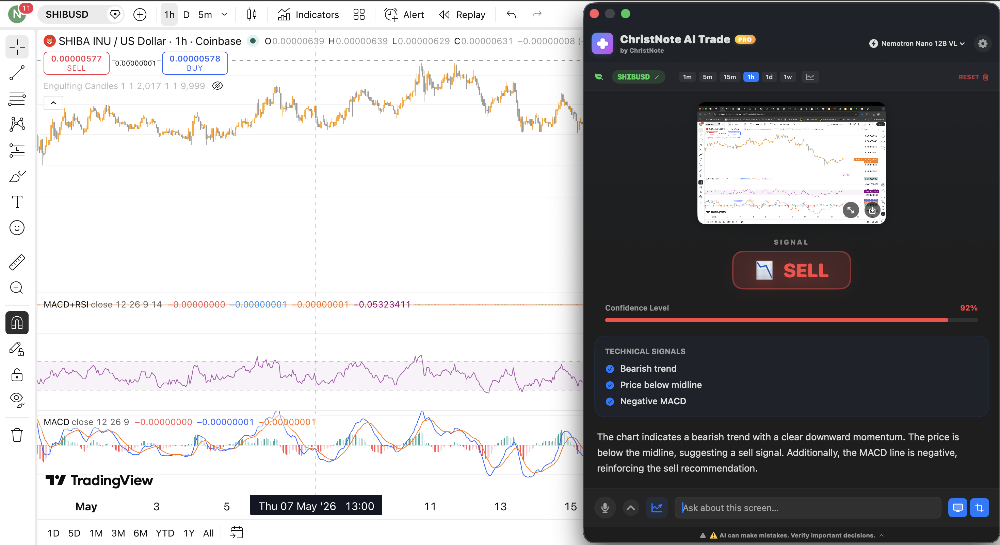

Modern AI for Smart Trading
Analyze charts, identify patterns, and manage risk with local vision models. 100% Free, Private, fast, and built for performance.

macOS App
Native Apple Silicon build. 100% Privacy.
Chrome Extension
Browser-side sidepanel companion.
100% Private & Free
Runs entirely on your machine. No data ever leaves your computer. Absolutely free, no subscriptions or hidden fees.
Local AI Models
Powered by Ollama. Supports Qwen 2.5 VL, LLaVA, and Llama 3.2. Private, fast, and secure.
Expert Analysis
Three specialized modes: Indicator (Signals), Educator (Concepts), and Risk Advisor (Management).
Installation Guide
1. Local AI
- 1 Install Ollama on your machine.
-
2
Run
ollama run qwen2.5-vlin your terminal. - 3 The app will connect to your local AI automatically.
2. macOS App
- 1 Download the `.zip` archive for Apple Silicon.
- 2 Move the app to your Applications folder.
- 3 Right-click and select Open to launch.
3. Extension
-
1
Unzip the extension and go to
chrome://extensions. - 2 Enable Developer Mode.
- 3 Click Load unpacked and select the folder.
Jesus loves you
"For God so loved the world that He gave His only begotten Son, that whoever believes in Him should not perish but have everlasting life." — John 3:16